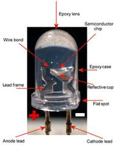
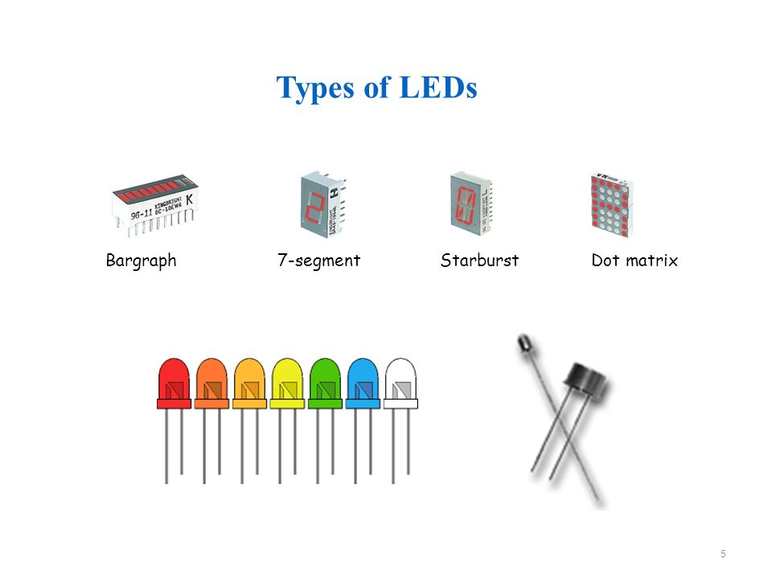
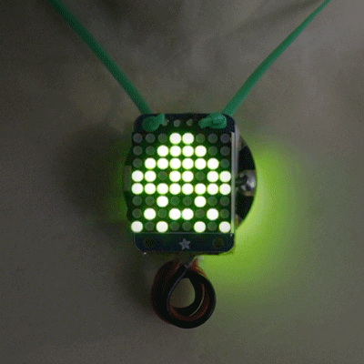
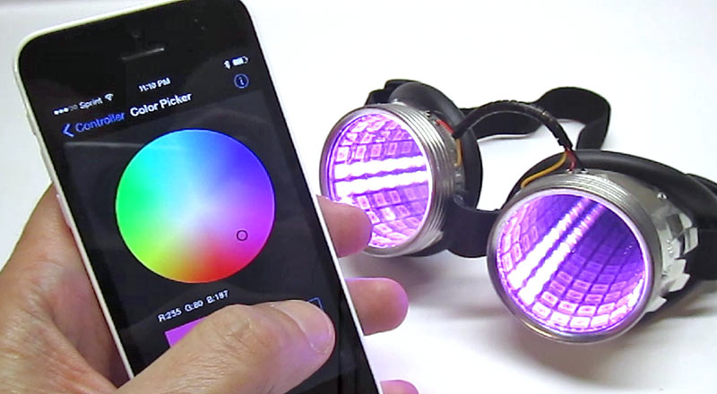
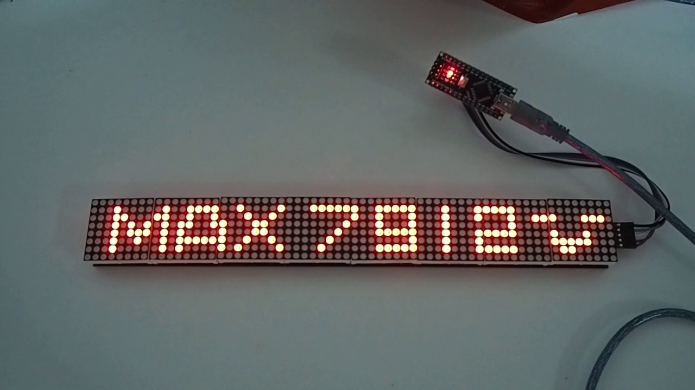

Light-Emitting Diode (LED)

LEDs - Light-emitting Diodes
You see LEDs all around. They are different from light bulbs in that they emit photons when electricity runs through them in the correct direction. Remember they are diodes and polarity matters. This means that LEDs have an anode (positive side) and a cathode (negative side). It is easy to spot the negative side, cathode, of the the 5mm LED as it has a short leg and a flat side compared to the anode. Since an LED is a diode and offers no resistence, it must be used with a resistor to prevent the LED from shorting or exploding because of too much current. A 470 ohm resistor should work for most LED projects we conduct in class. The more resistance the dimmer the LED will be. If you wanted to find the exact resistor needed for an LED you can try several LED resistor calculators.

LEDs come in a variety of types as illustrated in the picture above. We will use the 5mm domed, dot matrix, strips and seven segment in our projects. LEDs are measured in millacandella MCD, lumens or watts. A millacandella is 1,000 MCD equals one candle in brightness.
LED strips are also very commonly used. You will see analog and addressable LED strips as the two most common. We will use addressable. An analog strip has a power and ground wire and it is easy to controller using a controller. You can purchase single or multi color analog LED strips. By varying the amount of electricity applied to each color (red, green and blue RGB), you can control the color of each LED. Addressable strips use communication to each LED or pixel. This allows for each pixel to be different unlike the analog LED strips.
Adafruit LED Projects and Guides
Guide To LED's
The Magic of Neopixels
Neopixels Uberguide
Assignments-
1. Assemble and Design Acrylic Edge Lit Sign
- Gather the following items: 4" x 6" edge lit acrylic sheet, 12v power supply, 6" led strip, wood block
- Create your design on CorelDraw. Remember to mirror your design.
- Laser engrave your file
- Slide your acrylic into the led strip carefully as not to destroy the leds in the strip.
- Place your sign into the wood holder and plug in the 12v power supply.
- Upload original files (.cdr) and put a picture of the sign on your portfolio
- Describe the process of how the sign is illuminated and the led strip works. Is the strip analog or addressable? How do you know?
2. Animation Necklace 
- Gather the following items: Gemma microcontroller, lipo 150mAh battery, 8x8 LED Matrix w/ backpack, lipo charger
- Follow this guide to build the pendant
- Code the project to display something unique to you
- Cut a piece of string for the pendant and attach it to the back of the backpack
- Take a video of the pendant and put it on your portfolio
- Upload original .ino files to your portfolio
- Describe how a 8x8 LED matrix works in your portfolio. What is a common row anode and common row cathode?
- What is a bootloader and why is it important in the process of using the Gemma microprocessor?
3. Bluetooth Controlled Goggles 
- Gather the following items: Goggles,NeoPixel rings (2),Trinket Microcontroller,JST connector,Micro LiPo USB charger,LiPoly battery and Wire
- Follow this guide to build the goggles and this guide for the Bluetooth control
- Code the project
- You can get the bluetooth working after you complete the goggles
- Take a video or picture of your completed goggles on your head working and post it on your portfolio.
- Upload original .ino files to your portfolio. You need to alter the code slightly. Describe the code you altered in your portfolio.
- Describe how the goggles works in your portfolio. What are NeoPixel rings and how do they work?
4. RGB LED Sound and Music Visualizer and Addressable LED Strips
5. LED Matrix and 7 Segment Displays 
Back to index